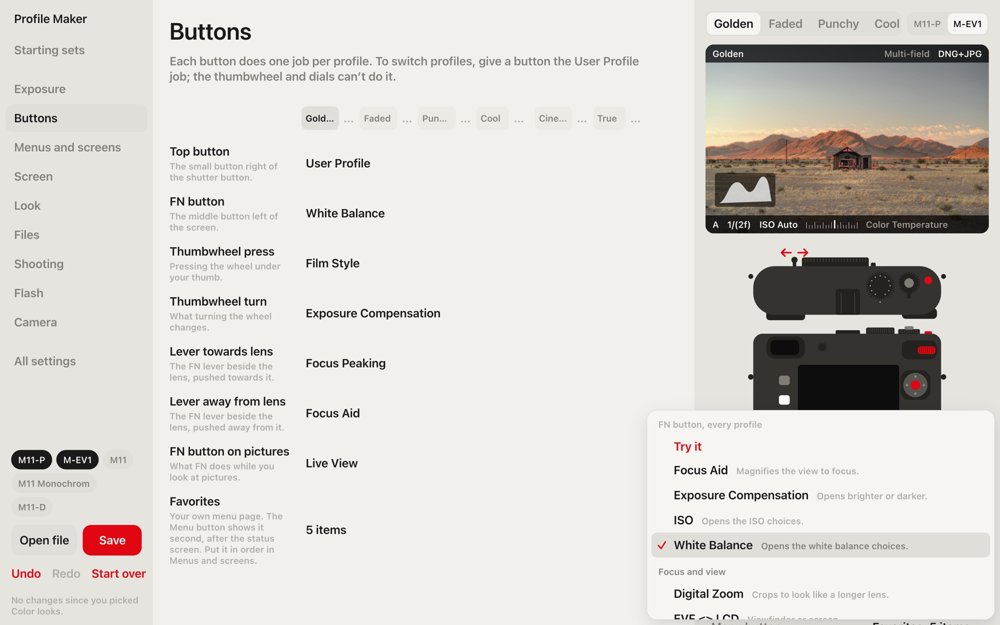
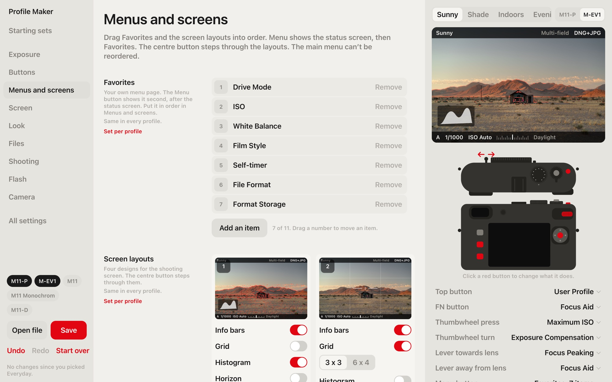
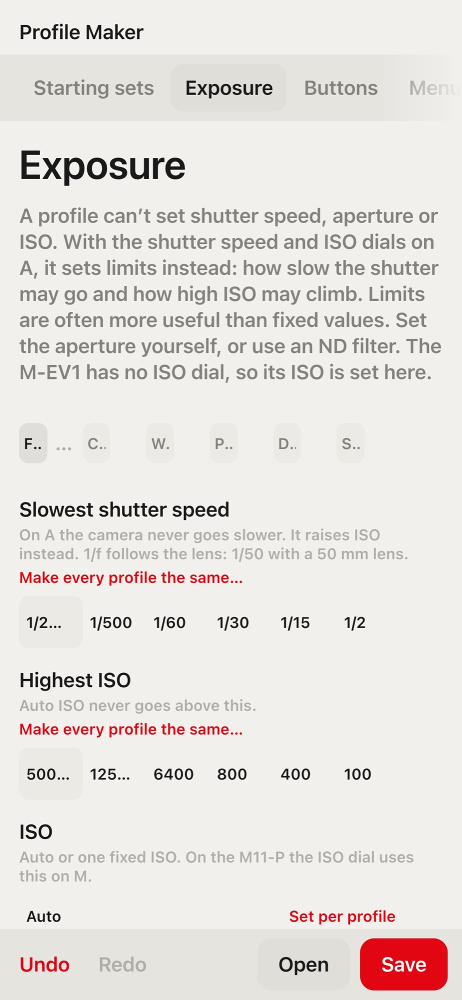

Profile Maker
Set up your Leica on a big screen, then give it to the camera as one file.
For the Leica M11, M11-P, M11-D, M11 Monochrom and M-EV1. Free. Runs in your browser; nothing leaves your computer.
Why
A new camera is an evening of menus.Hundreds of settings, four buttons and an arrow pad to reach them, one value at a time.
Names are typed letter by letter.Renaming a profile or filling Favorites means stepping through tiny menus, and nothing can be dragged into order.
One change, six times.A setting you want in every profile has to be changed in every profile, menu by menu.
Two bodies drift apart.An M11-P and an M-EV1 have slightly different menus and values. Keeping them in step by hand is guesswork.
You can’t compare.The camera shows one profile at a time, so you can’t see what makes Fast different from Slow.
No undo.A stray press changes a profile and nothing tells you.
The settings file is unreadable.The camera exports everything as four-letter codes and numbers, and skips any value it doesn’t allow without a word.
Starting again from memory.After a reset, a repair or a firmware update, your setup lives only in your head.
What it does
- Every profile side by side.A setting that is the same everywhere shows once. Change it once for all of them.
- The camera, drawn.The buttons you can set are red. Click one to choose its job from a short, grouped list, or try it on the camera’s screen.
- Menus and screens.Drag Favorites and the four screen layouts into the order you want.
- One file per camera.Each body gets its own file. Anything a body doesn’t have is swapped for the closest value, and you see every swap.
- Undo everything.Changed values are marked, and Save lists every change before you write the file.



Starting sets
Fifteen sets to begin from, with buttons, Favorites, screen layouts and a look already set. A profile can’t set shutter speed, aperture or ISO. With the dials on A it sets limits instead, which are often more useful than fixed values.
Speed ladderFast, Medium, Slow, Sloow
EverydaySunny, Shade, Indoors, Evening, Night, Tripod
MotionFreeze, Crisp, Walk, Pan, Drag, Streak
Color looksGolden, Faded, Punchy, Cool, Cinema, True
CinemaDay, Golden, Dusk, Neon, Interior, Noir
Black and whiteSoft, Mono, Hard, Noir, Grain, Color
StreetSunny, Shade, Inside, Night, Mono
PortraitOutdoor, Window, Flash, Mono
LandscapeTripod, Walk, Bracket, Blue hour, Mono
NightDark, Darker, Lights, Stars
EventsQuiet, People, Party, Details, Speeches
Film habitsFilm, Film Mono, Pushed
TravelDay, Museum, Food, Night, Saver
Kids and petsRun, Play, Inside, Asleep
FactoryEvery setting as a new camera has it
How to use it
- Pick your cameras.One file is made for each.
- Pick a starting set.Or open the file your camera exported.
- Change anything.Point at a setting to see what it does.
- Save and import.Copy settings.lcse to the card, then User Profile, Manage Profiles, Import Profiles.
Importing replaces every profile on the camera. Export your own first, so you can go back.